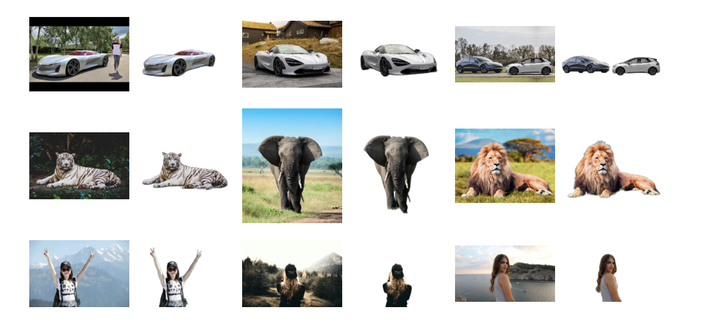

Rembg
Rembg可以去掉图片中的背景，效果如下

安装
CPU版
pip install rembg
GPU版
pip install rembg[gpu]
快速上手
安装成功后，可以在命令行中调动Rembg。如果只对单个图片进行处理
rembg i path/to/input.png path/to/output.png
对多个图片文件处理(批处理)，
rembg p path/to/input path/to/output
在Python中使用
把图片读取为二进制数据
from rembg import remove
#待处理的图片路径
input_path = 'input.png'
#处理后存储的图片路径
output_path = 'output.png'
with open(input_path, 'rb') as i:
with open(output_path, 'wb') as o:
input = i.read()
output = remove(input)
o.write(output)